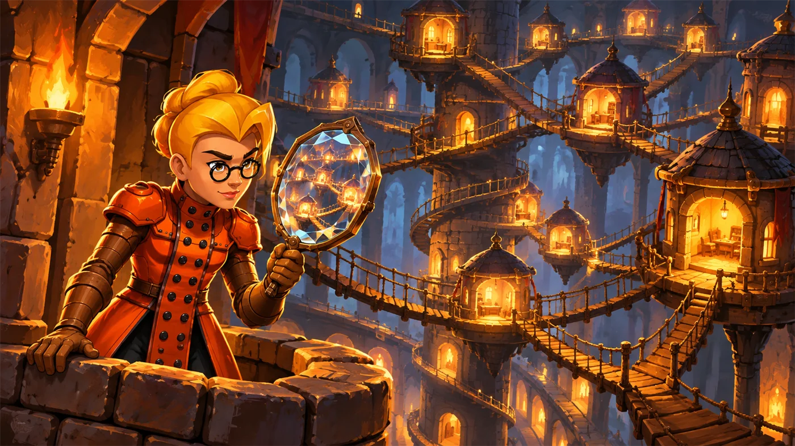
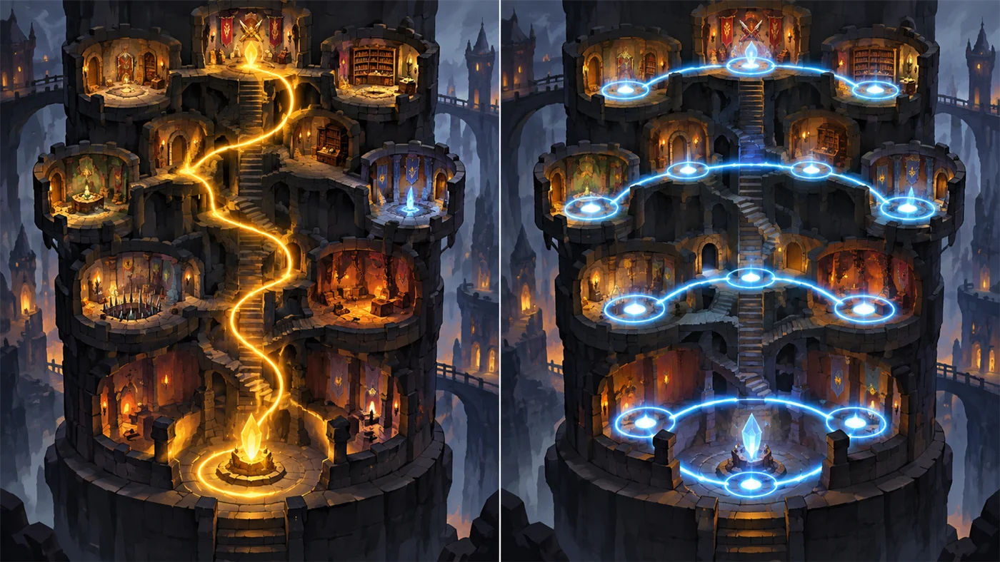
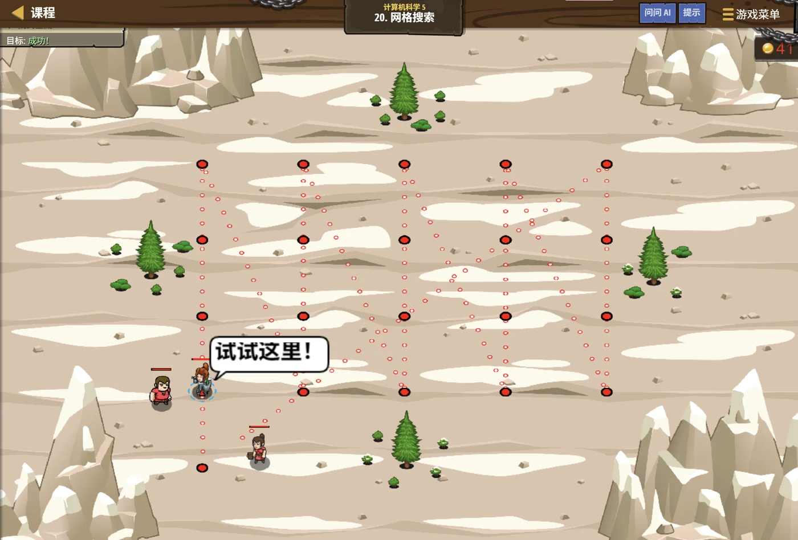

故事：宝藏埋在树林之间的某个位置，你只知道坐标的大致范围：
横向在 20 到 61 之间，纵向也在某个范围里。
一格一格找太慢了。塞尼克说，但只要范围明确，
把可能的点全走一遍，肯定能找到。
扣哒考级 · GESP PYTHON 七级 · 第 3 单元 | 雷鸣高塔 THUNDERSPIRE
塔身回廊 图与图的遍历
Graphs & Graph Traversal

塞尼克
沙海向导 · 你的向导
塔身内部的回廊绕来绕去，有的地方拐个弯又回到了原点。
你摊开地图一看：这不像是树，倒像一张网——节点之间彼此相连， 而且可以从很多条路互相走到。
塞尼克点点头：这就叫图。树只能从上往下，图可以四通八达。
你摊开地图一看：这不像是树，倒像一张网——节点之间彼此相连， 而且可以从很多条路互相走到。
塞尼克点点头：这就叫图。树只能从上往下，图可以四通八达。
塞尼克 · 沙海向导
图是数据结构里最"自由"的一种：节点之间想连就连，没有上下级，也没有层次。社交网络、地图导航、电路、课程依赖……全都可以用图来表示。
这一单元，我们学"怎么把图存进程序"和"怎么在图上走一遍"。
assets/illustrations/py-L7-03-01_tower_corridor.webp
【配图位】雷鸣高塔内部回廊的立体剖视图：一圈圈环形走廊通过多处阶梯互相连通，形成带环的网状结构；节点处亮着紫色灯标，几条不同颜色的探索路径沿廊道延伸。
0 单元导语与目标
Unit Overview
0.1 学习目标
0.2 考纲对照
1学完这个单元，你将能……
- 说清图与树的区别
- 分辨有向图与无向图、带权图与无权图
- 用邻接矩阵表示一张图
- 用邻接表表示一张图
- 在图上做 DFS 与 BFS 遍历
- 求出图中有几个连通分量
2对标 GESP 考纲（Python 七级）
- 理解图的基本概念：顶点、边、有向/无向、带权/无权、度
- 掌握图的两种存储方式：邻接矩阵与邻接表
- 掌握图的深度优先与广度优先遍历
- 考核目标：能用邻接表建图并完成遍历与连通性判断
1 什么是图
What Is a Graph
1.1 图由点和边组成
图由两部分组成：顶点（节点）和边（连接关系）。
1.2 树是图的一种特殊情况
图 2（SVG）：树是图的一种特殊情况
| 术语 | 含义 |
|---|---|
| 顶点（节点） | 图里的每个"点"，如 A、B、C |
| 边 | 两个顶点之间的连接 |
| 无向图 | 边没有方向：A 能到 B，B 也能到 A |
| 有向图 | 边有方向：只能从 A 到 B，不能反向 |
| 带权图 | 边上带着数字，如距离、花费 |
| 度 | 这个顶点连了几条边 |
| 连通 | 两个顶点之间存在路径 |
| 环 | 从一点出发，绕一圈又回到自己 |
2 图的两种表示
Two Representations
2.1 邻接矩阵与邻接表
方式一：邻接矩阵（用二维表格记"谁和谁相连"）
图 3（SVG）：邻接矩阵——一张 n×n 的 0/1 表格
方式二：邻接表（每个点记下"我能到谁"）
邻接表：用字典 + 列表最方便
Python
# 每个顶点对应一个列表，装它能直接到达的邻居
graph = {
"A": ["B", "C"],
"B": ["A", "C", "D"],
"C": ["A", "B"],
"D": ["B"]
}
print(graph["B"]) # ['A', 'C', 'D'] —— B 连了三个点要点 像查通讯录：找到名字，看它能联系谁
2.2 两种表示怎么选
两种表示怎么选？
邻接矩阵：判断"两点是否相连"很快；适合顶点少、边多的稠密图。
邻接表：省空间；遍历一个点的所有邻居很快；适合边少的稀疏图。
做题时若无特殊要求，优先用邻接表（字典 + 列表），写起来最快。
邻接矩阵：判断"两点是否相连"很快；适合顶点少、边多的稠密图。
邻接表：省空间；遍历一个点的所有邻居很快；适合边少的稀疏图。
做题时若无特殊要求，优先用邻接表（字典 + 列表），写起来最快。
assets/illustrations/py-L7-03-02_graph_adjacency_scene.webp
【配图位】高塔回廊的俯瞰图：一个个房间是发光的圆点，房间之间的走廊是连线，有几个房间通着三条以上走廊、有几个只通一条；旁边一块石板上把它抄成了"邻接表"表格，每一行写着"这个房间通着谁"。
3 图的遍历
Traversal
3.1 DFS：一路走到黑
图上的 DFS / BFS 与六级学的一模一样，唯一的区别是必须做访问标记——因为图里可能有环。
图的 DFS（递归版）
Python
visited = set()
def dfs(node):
if node in visited: # 走过了就回头
return
visited.add(node)
print(node, end=" ")
for nxt in graph[node]: # 挨个访问邻居
dfs(nxt)
dfs("A") # A B C DOUTPUT A B C D
3.2 BFS：一圈圈往外
图的 BFS（队列版）
Python
from collections import deque
visited = set(["A"])
queue = deque(["A"])
while queue:
node = queue.popleft()
print(node, end=" ")
for nxt in graph[node]:
if nxt not in visited:
visited.add(nxt)
queue.append(nxt)要点 与树的遍历只有一处不同：必须检查"是否访问过"
为什么图上一定要标记？
因为图里可能有环。比如 A 连 B、B 连 A，不标记的话程序会在 A 和 B 之间来回跳，永远停不下来。
树天生没有环，所以树的遍历可以不用 visited；但图必须用。
树天生没有环，所以树的遍历可以不用 visited；但图必须用。
4 连通分量
Connected Components
4.1 连通分量是什么
如果一张图分成好几块互不相连的部分，每一块就是一个连通分量。
数一数图里有几块
Python
graph = {
"A": ["B"],
"B": ["A"],
"C": ["D"],
"D": ["C"],
"E": [] # E 谁也不连，自己是单独一块
}
visited = set()
def dfs(node):
visited.add(node)
for nxt in graph[node]:
if nxt not in visited:
dfs(nxt)
count = 0
for v in graph:
if v not in visited: # 又发现一个没走过的点，说明是新的一块
dfs(v)
count = count + 1
print("连通分量个数：", count) # 3OUTPUT 连通分量个数：3 （{A,B}、{C,D}、{E}）
4.2 数连通分量的套路
数连通分量的套路：
遍历所有顶点，每遇到一个"还没被访问过"的点，就说明发现了一个新的连通分量，
然后从它出发做一次完整的 DFS（或 BFS），把这一块全部标记掉。
循环结束时，计数器就是连通分量的个数。
循环结束时，计数器就是连通分量的个数。
assets/illustrations/py-L7-03-03_connected_blocks.webp
【配图位】同一张回廊图被换成两种涂色：一整片连在一起的房间涂成青色、另外两小片各自涂成琥珀色与紫色，三块之间没有走廊相连；一名学徒指着涂色后的地图在数"一共几块"。
5 代码实战
Level Practice
关卡
网格搜索
进入关卡 →思路：用双重循环枚举范围内的每一个点。



assets/stages/py-L7-03-stage1_grid_search.webp
【关卡截图位】请把《网格搜索》的游戏画面截图放到此处（放入 assets/stages/ 目录，文件名为 py-L7-03-stage1_grid_search.webp）。
重点示例：枚举网格上的每个候选点
Python
leftBorder = 20
rightBorder = 61
# 横坐标从 20 试到 61，纵坐标也逐格试一遍
for x in range(leftBorder, rightBorder + 1, 4):
for y in range(34, 46, 4):
hero.moveXY(x, y)
item = hero.findNearestItem()
if item:
hero.moveXY(item.pos.x, item.pos.y)要点 双重循环遍历所有候选位置；
range(起点, 终点+1, 步长)
和图的关联：
把每个格点看成一个顶点，相邻格点之间连一条边——这张"网格"就是一张标准的图。
而"枚举每个格点"就相当于把图里所有顶点都访问一遍。
很多图论问题的第一反应，就是"我能不能把它变成一张网格"。
去扣哒世界闯这一关 →
而"枚举每个格点"就相当于把图里所有顶点都访问一遍。
很多图论问题的第一反应，就是"我能不能把它变成一张网格"。
6 常见陷阱
Common Pitfalls

扣哒鸭 · 调试官
图论的坑几乎全在"环"上。四条，条条都和安全使用 visited 有关。
1
遍历图时忘了 visited，程序跑不完。

扣哒鸭：树没有环，图有环。
图的 DFS / BFS 必须用 visited 记录访问过的顶点。
这是树和图的遍历最大的区别。
这是树和图的遍历最大的区别。
正确做法：进入顶点立即标记；BFS 在入队时标记
2
建无向图时只加了单向边。

扣哒鸭：无向图的 A—B 是双向的：
只加一边，遍历时会漏掉很多点。
graph["A"].append("B") 之后，还要 graph["B"].append("A")。只加一边，遍历时会漏掉很多点。
正确做法：无向图要加两条有向边
3
邻接表里某个顶点忘了初始化。

扣哒鸭：如果一个顶点没有任何邻居，它也得在字典里占一个位置，
值是空列表。
否则访问
否则访问
graph[v] 会报 KeyError，或者那个顶点被整个漏掉。正确做法：所有顶点都要出现在字典里，没有邻居就写
[]4
把有向图当无向图处理。

扣哒鸭：读题时要看清边有没有方向。
"A 能到 B"和"A 与 B 相连"是两回事—— 前者只加一条边，后者要加两条。
"A 能到 B"和"A 与 B 相连"是两回事—— 前者只加一条边，后者要加两条。
正确做法：先确认有向还是无向，再决定加一条还是两条
7 题目练习
Practice
第 1 题改编自 2026 年 6 月 · Python 七级 第 10 题，其余为原创练习题。
改编自 2026 年 6 月 · Python 七级 · 第 10 题单选题
雷塔里的无向图边为 (1, 2)、(1, 3)、(2, 4)、(3, 4)、(4, 5)。从顶点 1 开始进行广度优先搜索（BFS），每次把出队顶点的相邻顶点按编号从小到大入队。
则顶点 4 第一次入队时，队列中的内容是（ ）。
则顶点 4 第一次入队时，队列中的内容是（ ）。
A.1, 2, 3, 4 B.2, 3, 4 C.3, 4 D.3, 4, 5
查看答案与详解
答案：C。BFS 用队列"一层一层"地访问，一步步跟着走：
① 队列是
② 1 出队，把它的邻居 2、3 按编号入队 →
③ 2 出队，邻居里 1 已访问过，把 4 入队 →
为什么 A 不对？1 早就出队了，队列里不会再有它；
D 为什么不对？5 是 4 的邻居，要等 4 出队之后才会入队。
三个要点：① BFS 用队列（先进先出）；
② 入队前要检查"是否访问过"，否则会来回打转；
③ 邻接点的枚举顺序会影响访问序列 —— 这也是判断题 第 4 题考的点。
对应小节3 广度优先搜索（BFS）。
① 队列是
[1]；② 1 出队，把它的邻居 2、3 按编号入队 →
[2, 3]；③ 2 出队，邻居里 1 已访问过，把 4 入队 →
[3, 4]—— 这正是顶点 4 第一次入队的那一刻，队列内容是 3, 4。为什么 A 不对？1 早就出队了，队列里不会再有它；
D 为什么不对？5 是 4 的邻居，要等 4 出队之后才会入队。
三个要点：① BFS 用队列（先进先出）；
② 入队前要检查"是否访问过"，否则会来回打转；
③ 邻接点的枚举顺序会影响访问序列 —— 这也是判断题 第 4 题考的点。
对应小节3 广度优先搜索（BFS）。
原创练习题单选题
关于树和图的关系，下列说法正确的是（ ）。
A.树和图没有关系
B.树是图的一种特殊情况（无环且连通）
C.图是树的一种特殊情况
D.树里一定有环，图里一定没有环
B.树是图的一种特殊情况（无环且连通）
C.图是树的一种特殊情况
D.树里一定有环，图里一定没有环
查看答案与详解
答案：B。树可以看作"连通且没有环"的图——
因此树里任意两点之间有且只有一条路径。
图则自由得多：可以有环，也可以分成好几块。
对应小节1 什么是图。
图则自由得多：可以有环，也可以分成好几块。
对应小节1 什么是图。
原创练习题单选题
用邻接表表示无向图时，如果 A 与 B 之间有一条边，那么正确的做法是（ ）。
A.只在 A 的列表里加 B
B.只在 B 的列表里加 A
C.A 的列表加 B，同时 B 的列表也加 A
D.不需要记录，程序会自动知道
B.只在 B 的列表里加 A
C.A 的列表加 B，同时 B 的列表也加 A
D.不需要记录，程序会自动知道
查看答案与详解
答案：C。无向图的边是双向的，
所以两边的邻接表都要加上对方。
如果是有向图（比如"只能从 A 到 B"），才只加一边。
对应小节2 图的两种表示。
如果是有向图（比如"只能从 A 到 B"），才只加一边。
对应小节2 图的两种表示。
原创练习题判断题
图的 DFS 遍历即使不加访问标记也不会出错，因为 DFS 一定会结束。（ ）
查看答案与详解
答案：错误（×）。图里可能有环，不加标记会在环里反复兜圈子，
导致死循环或栈溢出。
访问标记是图遍历的必要条件。
对应小节3 图的遍历。
访问标记是图遍历的必要条件。
对应小节3 图的遍历。
原创练习题单选题
下列关于邻接矩阵的说法，正确的是（ ）。
A.无向图的邻接矩阵是对称的
B.邻接矩阵占用的空间比邻接表少
C.邻接矩阵无法表示带权图
D.邻接矩阵只能表示有向图
B.邻接矩阵占用的空间比邻接表少
C.邻接矩阵无法表示带权图
D.邻接矩阵只能表示有向图
查看答案与详解
答案：A。无向图中 A 连 B 就意味着 B 连 A，
所以矩阵沿对角线对称。
B 错：矩阵是 n×n，边少时反而更浪费；
C 错：把 1 换成具体权值就能表示带权图；
D 错：有向、无向都能表示。
对应小节2 图的两种表示。
B 错：矩阵是 n×n，边少时反而更浪费；
C 错：把 1 换成具体权值就能表示带权图；
D 错：有向、无向都能表示。
对应小节2 图的两种表示。
原创练习题判断题
要统计一张图里有几个连通分量，可以反复对未访问的顶点做 DFS，每做一次计数加一。（ ）
查看答案与详解
答案：正确（√）。每发现一个"还没被访问过"的顶点，
就说明进入了一个新的连通块。
从它出发遍历一次，就会把这一整块全部标记掉。
对应小节4 连通分量。
从它出发遍历一次，就会把这一整块全部标记掉。
对应小节4 连通分量。
原创练习题单选题
已知
graph = {"A": ["B"], "B": ["A", "C"], "C": ["B"]}，
从 A 出发做 BFS，访问顺序是（ ）。
A.A B C B.A C B C.C B A D.B A C
查看答案与详解
答案：A。BFS 一层层访问：
第 1 层：A；第 2 层：A 的邻居 B；第 3 层：B 的邻居 C。
所以是 A B C。
注意：这个顺序也是 DFS 的顺序——因为这条图本身就是一条链。
对应小节3 图的遍历。
第 1 层：A；第 2 层：A 的邻居 B；第 3 层：B 的邻居 C。
所以是 A B C。
注意：这个顺序也是 DFS 的顺序——因为这条图本身就是一条链。
对应小节3 图的遍历。
原创练习题编程题
题目要求：用邻接表表示一张无向图，输出①从 A 出发能到达多少个顶点；
②整张图共有几个连通分量。
查看参考答案与要点
edges = [("A", "B"), ("B", "C"), ("D", "E")]
# ① 建图：所有出现过的顶点都要进字典
graph = {}
for u, v in edges:
if u not in graph: graph[u] = []
if v not in graph: graph[v] = []
graph[u].append(v) # 无向图：两边都加
graph[v].append(u)
print(graph)
# ② 从 A 出发能到达几个顶点
visited = set()
def dfs(node):
visited.add(node)
for nxt in graph[node]:
if nxt not in visited:
dfs(nxt)
dfs("A")
print("从 A 能到达：", len(visited), "个顶点") # 3
# ③ 数连通分量
visited = set()
count = 0
for v in graph:
if v not in visited:
dfs(v)
count = count + 1
print("连通分量：", count) # 2
输出：{'A': ['B'], 'B': ['A', 'C'], 'C': ['B'], 'D': ['E'], 'E': ['D']}；
从 A 能到达 3 个顶点；连通分量 2 个
要点：
① 建图时所有顶点都要初始化，否则访问会报 KeyError；
② 无向图要加两条边；
③ 数连通分量前要把 visited 清空重来；
④ 两个分量分别是 {A,B,C} 和 {D,E}。
对应小节2 图的两种表示；4 连通分量。
8 本单元小结
Unit Summary
塞尼克 · 沙海向导
三句话记住图：一、图 = 顶点 + 边；树是"无环且连通"的特殊图。
二、建图用邻接表（字典 + 列表）；无向图要加两条边。
三、图的遍历必须带 visited——因为图里可能有环。
还有一句：连通分量的个数 = 需要从头开始 DFS 的次数。
你在塔身回廊中收获了什么
- 图——由顶点和边组成，比树更自由；树是"无环连通图"。
- 术语——有向/无向、带权/无权、度、连通、环。
- 邻接矩阵——n×n 的表格；查连接快，但边少时浪费空间。
- 邻接表——字典 + 列表；省空间，是做题的首选。
- 建图要点——无向图要加两条边；所有顶点都要初始化。
- 图的遍历——DFS 用栈/递归，BFS 用队列；都必须带 visited。
- 连通分量——从未访问的顶点出发做一次 DFS，计数加一。